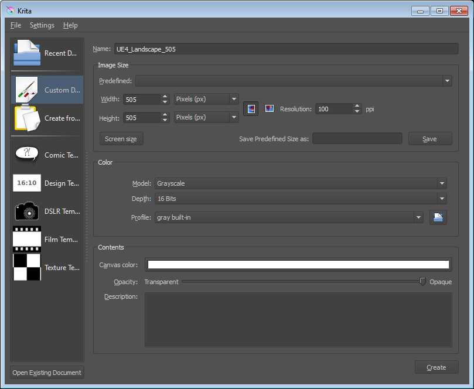
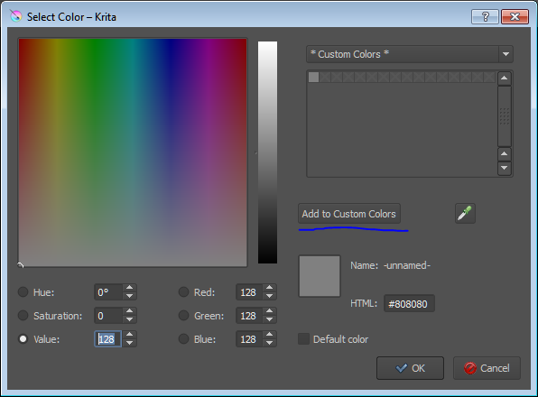
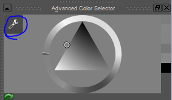
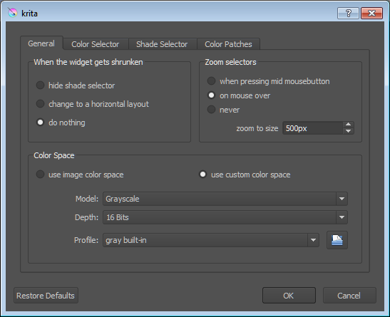
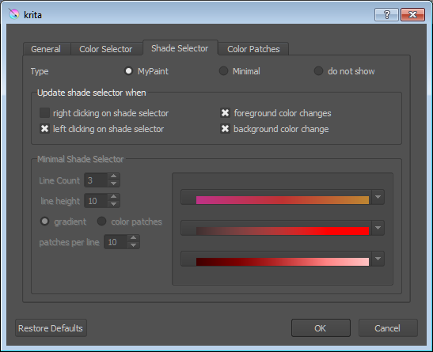

Creating heightmaps with Krita
Contents
Create a New Document
Create a new document in Krita. The dimensions of the image should match one of the Overall size (vertices) of UE4’s Recommended Landscape Sizes .
Set the Model to Grayscale , Depth to 16 Bits , and Profile to “ gray built-in ”.

Click the bar next to Canvas Color and set the Value field to 128 . This will make the background color of the image equal to the default actor’s height in UE4 (Z=0). Click the Add to Custom Colors button so you can easily access this important color value.

Interface
Change the color selector to make it easier to select finer shades of gray. Click the wrench under Advanced Color Selector .

Update your settings to match the following screenshots. Under Zoom selectors , the zoom to size should be set to a large value. On my 1920x1080 monitor, I’ve set the value to 600px .

Change the settings to match the Shade Selector tab as well.

Now when you hover the mouse over the gray cross, a larger version will appear. Hover your mouse over the center of that larger cross and you’ll be able to select subtle variations of the currently selected color.
Next click on the Layers tab which may be hidden behind the Brush Presets tab. Click the lock icon under Layer 1 . This is your background, and it is good practice to make any changes to additional layers on top of it. Press the Insert key to add a new layer, or select Paint Layer from the add layer drop-down icon.
Painting
Lighter colors increase the height of the terrain, darker colors lower the terrain. Remember that the neutral gray color is equal to Z=0 in UE4. Black will be the bottom of a Grand Canyon and solid white the summit of Mt. Everest.
You want to use brushes that have soft falloffs and no noise unless you happen to be making unnatural cliffs or a field of volcanic glass.
You can quickly change the size of the brush using [ and ] .
If you find the changes to your canvas are so slight you cannot see them, change the layer you are editing to Color Dodge or Burn . Just remember to change it back to Normal before you save it.
Saving
Krita will not warn or stop you from saving in a format where it cannot preserve layer information. Specifically, if you save your file as a PNG for export to UE4 and exit Krita, you will have lost all the fancy data such as layers and strokes that are normally included in an image-editing file. For this reason it is recommended that you Save as a Krita file (.kra) and Export as a PNG.
When exporting, after choosing a filename and location, change Save as type: to PNG image and click Save . Slide the Compress slider to Fast and be sure Interlacing is unchecked.
Importing into Unreal Editor 4
In UE4, press Shift-3 to open the Landscape editor. Assuming you don’t already have a landscape imported, select the Import from File radio button under the New Landscape section and select the PNG you exported. Further assuming you created an image that matches one of the recommended landscape sizes, all of the additional information will be correctly filled in. Optionally assign a material, M_Ground_Gravel from the Starter Assets is a fine choice. Press the Import button.
Previewing Changes in Unreal Editor 4
You can preview changes you make in Krita by first saving your document as a PNG (and breaking the rule above). Then to preview, press CTRL-S to save, tab to UE4, undo the previous import with CTRL-Z, and clicking the import button. This can be automated with a simple script.
Started by: